在使用Spring构建的应用程序中，适当使用事件发布与监听的机制可以使我们的代码灵活度更高，降低耦合度。Spring提供了完整的事件发布与监听模型，在该模型中，事件发布方只需将事件发布出去，无需关心有多少个对应的事件监听器；监听器无需关心是谁发布了事件，并且可以同时监听来自多个事件发布方发布的事件，通过这种机制，事件发布与监听是解耦的。
本节将举例事件发布与监听的使用，并介绍内部实现原理。
事件发布监听例子
新建springboot应用，boot版本2.4.0，引入如下依赖：
1 | <dependencies> |
自定义事件
Spring中使用ApplicationEvent接口来表示一个事件，所以我们自定义事件MyEvent需要实现该接口：
1 | public class MyEvent extends ApplicationEvent { |
构造器source参数表示当前事件的事件源，一般传入Spring的context上下文对象即可。
事件发布器
事件发布通过事件发布器ApplicationEventPublisher完成，我们自定义一个事件发布器MyEventPublisher：
1 |
|
在自定义事件发布器MyEventPublisher中，我们需要通过ApplicationEventPublisher来发布事件，所以我们实现了ApplicationEventPublisherAware接口，通过回调方法setApplicationEventPublisher为MyEventPublisher的ApplicationEventPublisher属性赋值；同样的，我们自定义的事件MyEvent构造函数需要传入Spring上下文，所以MyEventPublisher还实现了ApplicationContextAware接口，注入了上下文对象ApplicationContext。
publishEvent方法发布了一个自定义事件MyEvent。事件发布出去后，我们接着编写相应的事件监听器。
注解监听
我们可以方便地通过@EventListener注解实现事件监听，编写MyEventPublisher：
1 |
|
被@EventListener注解标注的方法入参为MyEvent类型，所以只要MyEvent事件被发布了，该监听器就会起作用，即该方法会被回调。
编程实现监听
除了使用@EventListener注解实现事件的监听外，我们也可以手动实现ApplicationListener1
2
3
4
5
6
7
8
9
10
public class MyEventListener implements ApplicationListener<MyEvent> {
private final Logger logger = LoggerFactory.getLogger(this.getClass());
public void onApplicationEvent(MyEvent event) {
logger.info("收到自定义事件MyEvent");
}
}
测试
在springboot的入口类中测试事件的发布：
1 |
|
运行程序，输出如下：
1 | 2020-06-22 16:31:46.667 INFO 83600 --- [ main] c.m.demo.publisher.MyEventPublisher : 开始发布自定义事件MyEvent |
可以看到，两个监听器都监听到了事件的发布。此外细心的读者会发现，事件发布和事件监听是同一个线程完成的，过程为同步操作，只有当所有对应事件监听器的逻辑执行完毕后，事件发布方法才能出栈。后面进阶使用会介绍如何使用异步的方式进行事件监听。
事件发布监听原理
事件发布监听过程
在事件发布方法上打个断点：
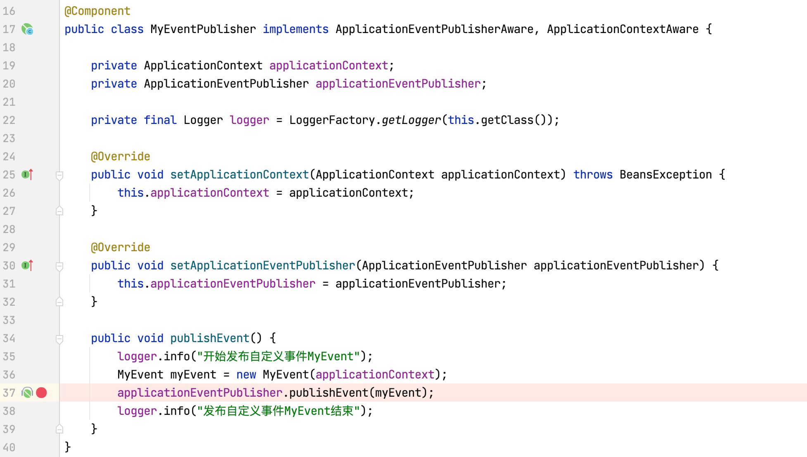
以debug的方式启动程序，程序执行到该断点后点击Step Into按钮，程序跳转到AbstractApplicationContext的publishEvent(ApplicationEvent event)方法：
继续点击Step Into，程序跳转到AbstractApplicationContext的publishEvent(Object event, @Nullable ResolvableType eventType)方法：
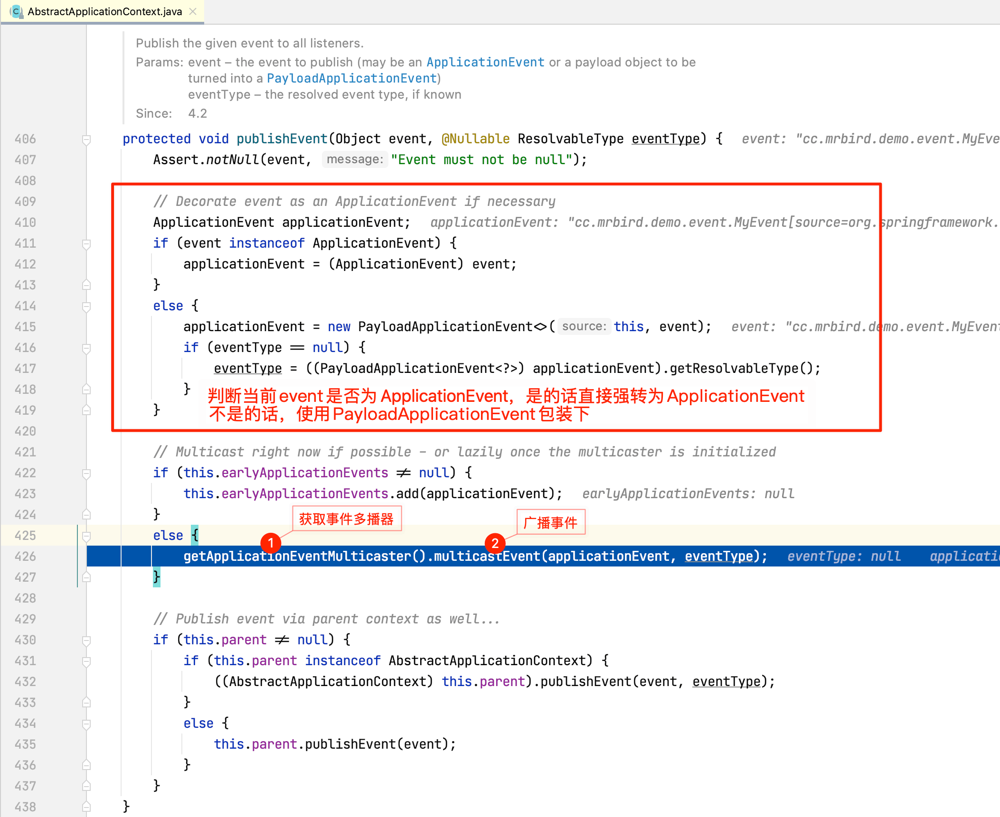
getApplicationEventMulticaster方法用于获取广播事件用的多播器，源码如下所示：
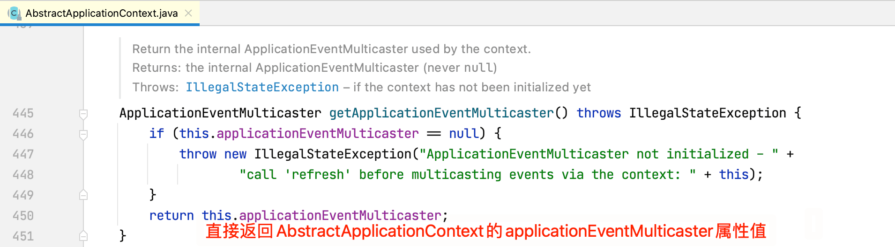
那么AbstractApplicationContext的applicationEventMulticaster属性是何时赋值的呢，下面将会介绍到。
获取到事件多播器后，调用其multicastEvent方法广播事件，点击Step Into进入该方法内部查看具体逻辑：
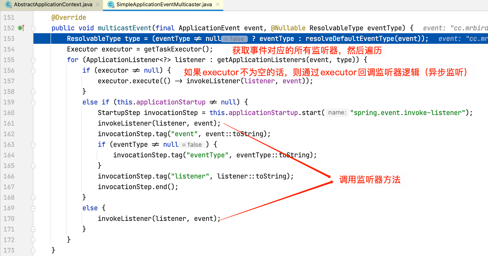
查看invokeListener方法源码：
继续查看doInvokeListener方法源码：

上述过程就是整个事件发布与监听的过程。
多播器创建过程
为了弄清楚AbstractApplicationContext的applicationEventMulticaster属性是何时赋值的（即事件多播器是何时创建的），我们在AbstractApplicationContext的applicationEventMulticaster属性上打个断点：
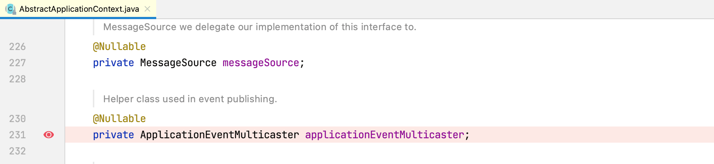
以debug的方式启动程序，程序跳转到了AbstractApplicationContext的initApplicationEventMulticaster方法中：
通过跟踪方法调用栈，我们可以总结出程序执行到上述截图的过程：
SpringBoot入口类的main方法执行SpringApplication.run(MyApplication.class, args)启动应用：
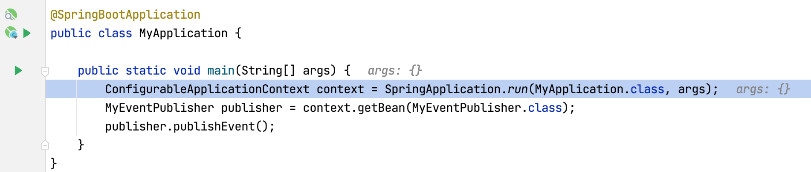
run方法内部包含refreshContext方法（刷新上下文）：
refresh方法内部包含initApplicationEventMulticaster方法：
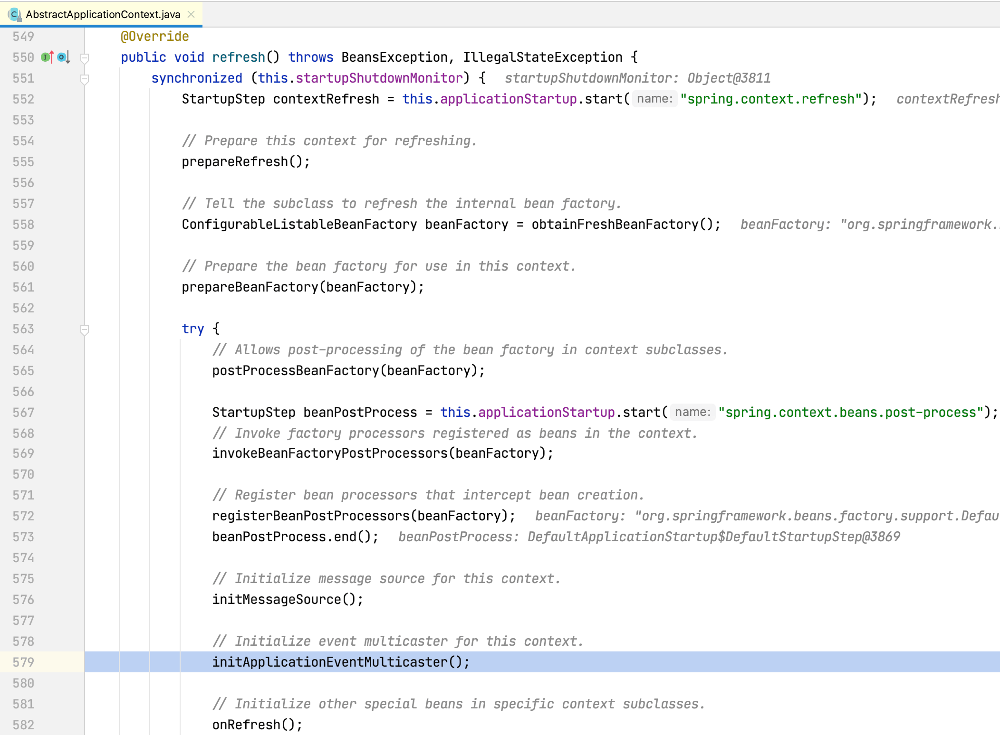
initApplicationEventMulticaster方法创建多播器。
监听器获取过程
在追踪事件发布与监听的过程中，我们知道事件对应的监听器是通过getApplicationListeners方法获取的：
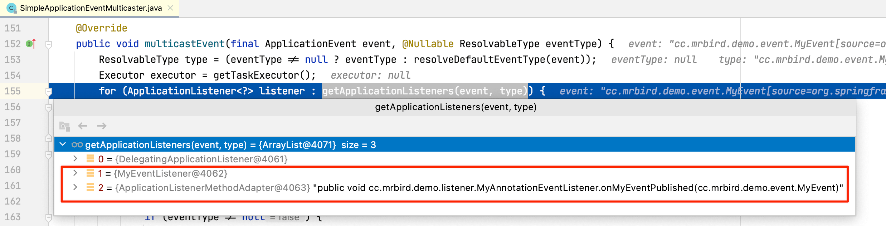
方法返回三个MyEvent事件对应的监听器，索引为0的监听器为DelegatingApplicationListener，它没有实质性的处理某事件，忽略；索引为1的监听器为通过实现ApplicationEventListener接口的监听器；索引为2的监听器为通过@EventListener实现的监听器。
编程实现监听器注册过程
查看getApplicationListeners源码：
其中retrieverCache的定义为final Map<ListenerCacheKey, CachedListenerRetriever> retrieverCache = new ConcurrentHashMap<>(64)。
接着查看retrieveApplicationListeners方法（方法见名知意，程序第一次获取事件对应的监听器时，缓存中是空的，所以继续检索获取事件对应的监听器）：
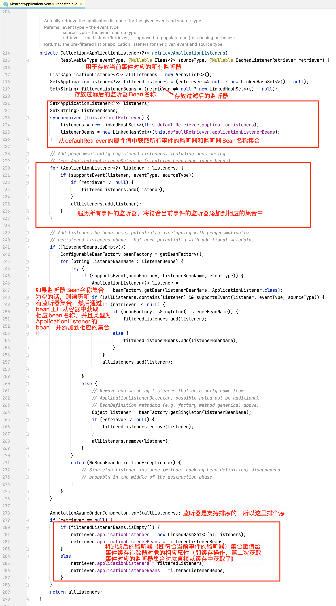
从上面这段代码我们知道，用于遍历的监听器集合对象listeners和listenerBeans的值是从this.defaultRetriever的applicationListeners和applicationListenerBeans属性获取的，所以我们需要关注这些属性是何时被赋值的。defaultRetriever的类型为DefaultListenerRetriever：
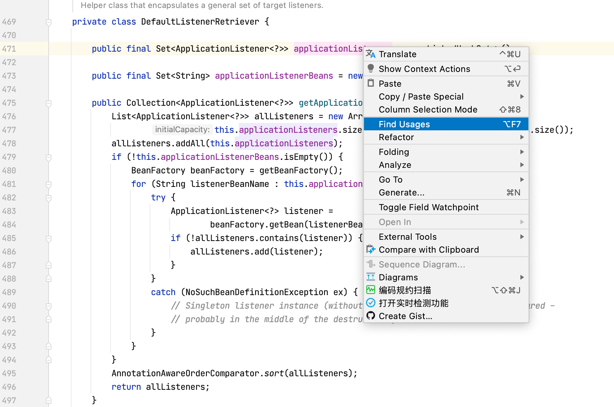
我们在applicationListeners属性上右键选择Find Usages查看赋值相关操作：
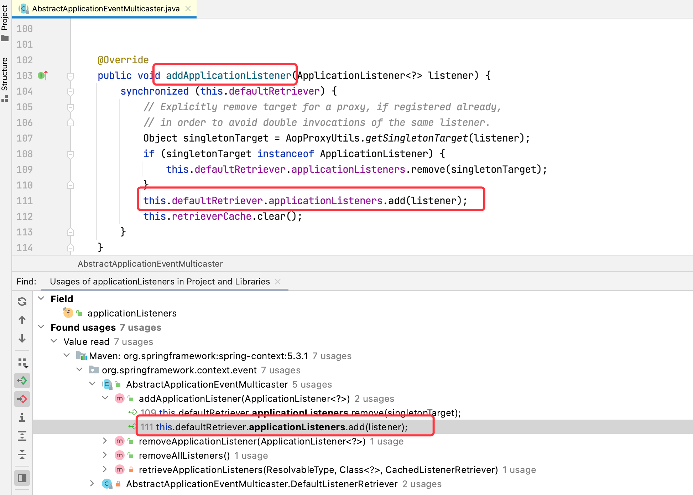
可以看到，赋值操作发生在AbstractApplicationEventMulticaster的addApplicationListener方法中，
继续在addApplicationListener方法上右键选择Find Usages查看调用源：
我们在registerListeners方法上打个断点，重新启动程序，查看方法调用栈：
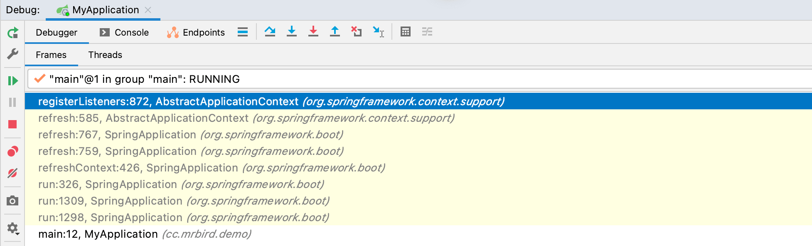
从方法调用栈我们可以总结出this.defaultRetriever的applicationListeners和applicationListenerBeans属性值赋值的过程：
SpringApplication.run(MyApplication.class, args)启动Boot程序；run方法内部调用refreshContext刷新容器方法：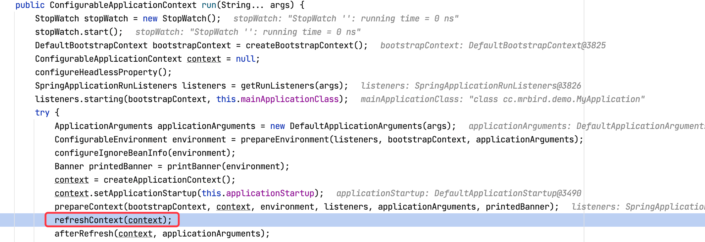
refresh方法内部调用了registerListener方法注册监听器：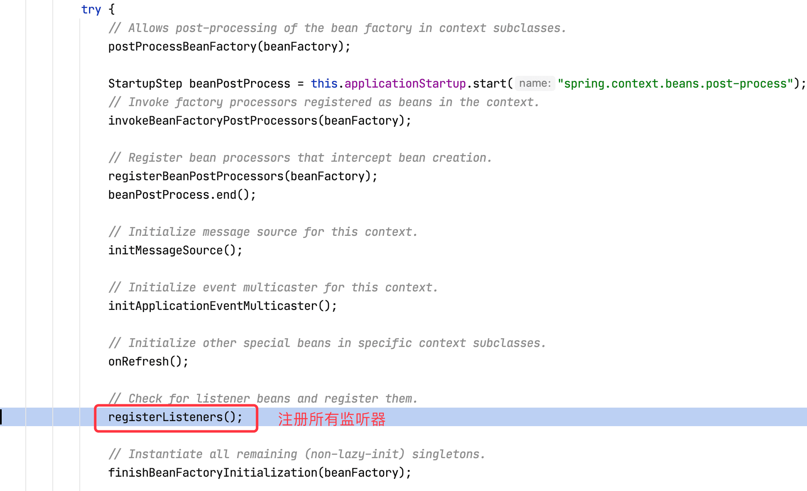
registerListeners方法内部从IOC容器获取所有ApplicationListener类型Bean，然后赋值给this.defaultRetriever的applicationListeners和applicationListenerBeans属性。
注解监听器注册过程
查看@EventListener注解源码：
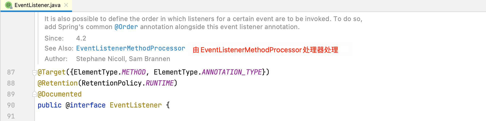
查看EventListenerMethodProcessor源码：
其实现了SmartInitializingSingleton接口，该接口包含afterSingletonsInstantiated方法：
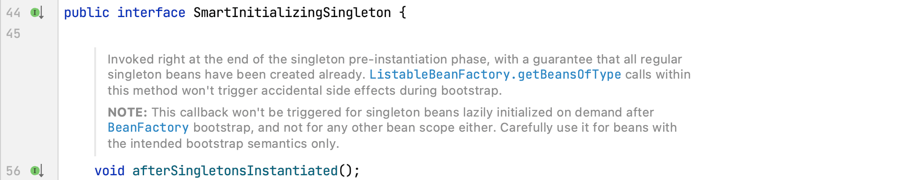
通过注释可以看到这个方法的调用时机为：单实例Bean实例化后被调用，此时Bean已经被创建出来。
我们查看EventListenerMethodProcessor是如何实现该方法的：
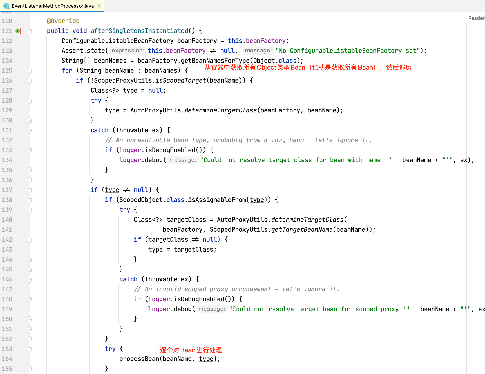
继续查看processBean方法源码：
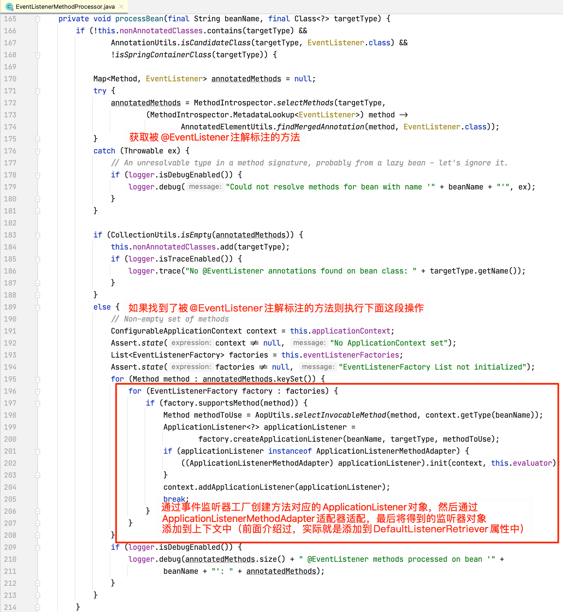
至此，两种方式注册监听器的原理都搞清楚了。
使用进阶与拓展
事件监听异步化
通过前面的分析，我们知道事件广播和监听是一个线程完成的同步操作，有时候为了让广播更有效率，我们可以考虑将事件监听过程异步化。
单个异步
先来看看如何实现单个监听器异步。
首先需要在springboot入口类上通过@EnableAsync注解开启异步，然后在需要异步执行的监听器方法上使用@Async注解标注，以MyAnnotationEventListener为例：
1 |
|
启动程序，输出如下：
通过日志可以看出来，该监听器方法已经异步化，执行线程为task-1。
整体异步
通过前面源码分析，我们知道多播器在广播事件时，会先判断是否有指定executor，有的话通过executor执行监听器逻辑。所以我们可以通过指定executor的方式来让所有的监听方法都异步执行：
新建一个配置类：
1 |
|
在配置类中，我们注册了一个名称为AbstractApplicationContext.APPLICATION_EVENT_MULTICASTER_BEAN_NAME（即applicationEventMulticaster）的Bean，用于覆盖默认的事件多播器，然后指定了TaskExecutor，SimpleAsyncTaskExecutor为Spring提供的异步任务executor。
在启动项目前，先把之前在springboot入口类添加的@EnableAsync注解去掉，然后启动项目，输出如下：
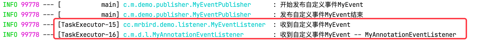
可以看到，监听器事件都异步化了。
多事件监听器
事件监听器除了可以监听单个事件外，也可以监听多个事件（仅@EventListener支持），修改MyAnnotationEventListener：
1 |
|
该监听器将同时监听MyEvent、ContextRefreshedEvent和ContextClosedEvent三种类型事件：
监听器排序
单个类型事件也可以有多个监听器同时监听，这时候可以通过实现Ordered接口实现排序（或者@Order注解标注）。
修改MyEventListener：
1 |
|
修改MyAnnotationEventListener：
1 |
|
启动程序输出如下：
配合SpEL表达式
@EventListener注解还包含一个condition属性，可以配合SpEL表达式来条件化触发监听方法。修改MyEvent，添加一个boolean类型属性：
1 | public class MyEvent extends ApplicationEvent { |
在发布事件的时候，将该属性设置为false：
1 |
|
在MyAnnotationEventListener的@EventListener注解上演示如何使用SpEL：
1 |
|
condition = "#event.flag"的含义为，当前event事件（这里为MyEvent）的flag属性为true的时候执行。
启动程序，输出如下：
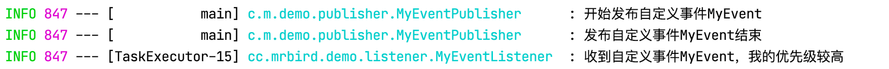
因为我们发布的MyEvent的flag属性值为false，所以上面这个监听器没有被触发。
事务事件监听器
Spring 4.2开始提供了一个@TransactionalEventListener注解用于监听数据库事务的各个阶段：
- AFTER_COMMIT - 事务成功提交；
- AFTER_ROLLBACK – 事务回滚后；
- AFTER_COMPLETION – 事务完成后（无论是提交还是回滚）；
- BEFORE_COMMIT - 事务提交前；
例子：
1 | (phase = TransactionPhase.AFTER_COMMIT) |